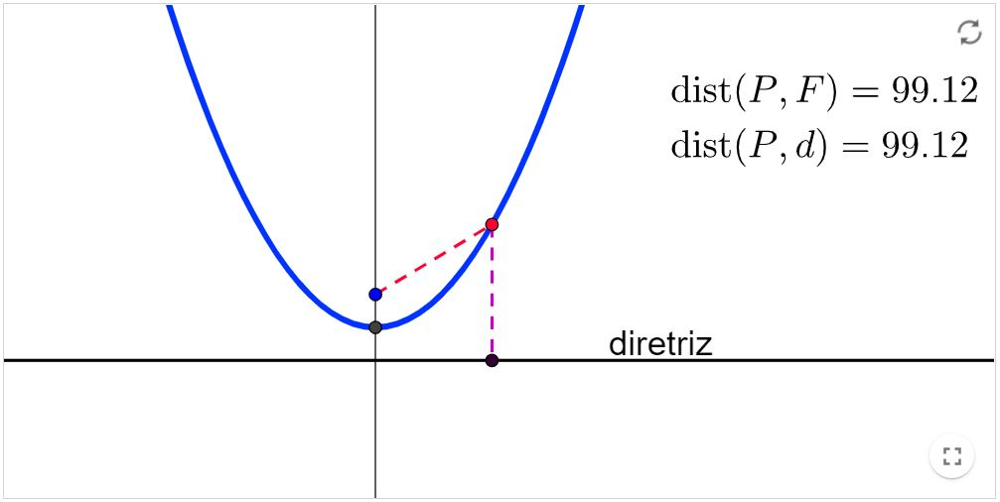
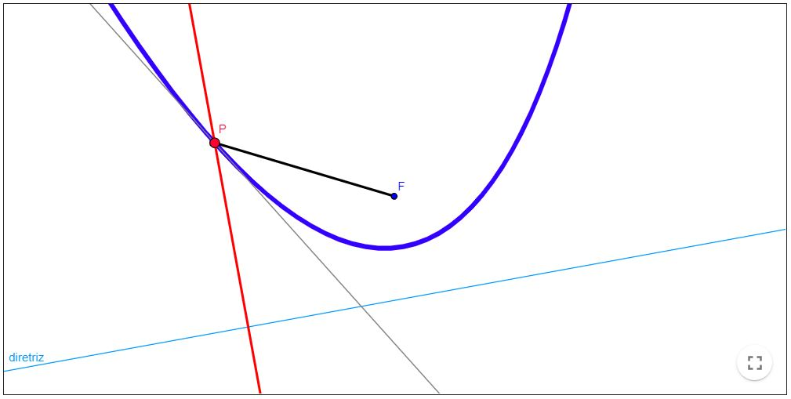
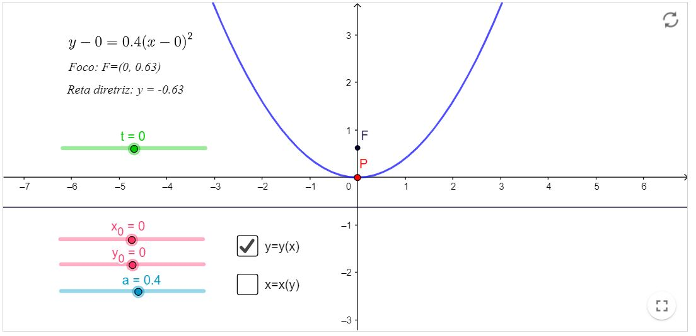
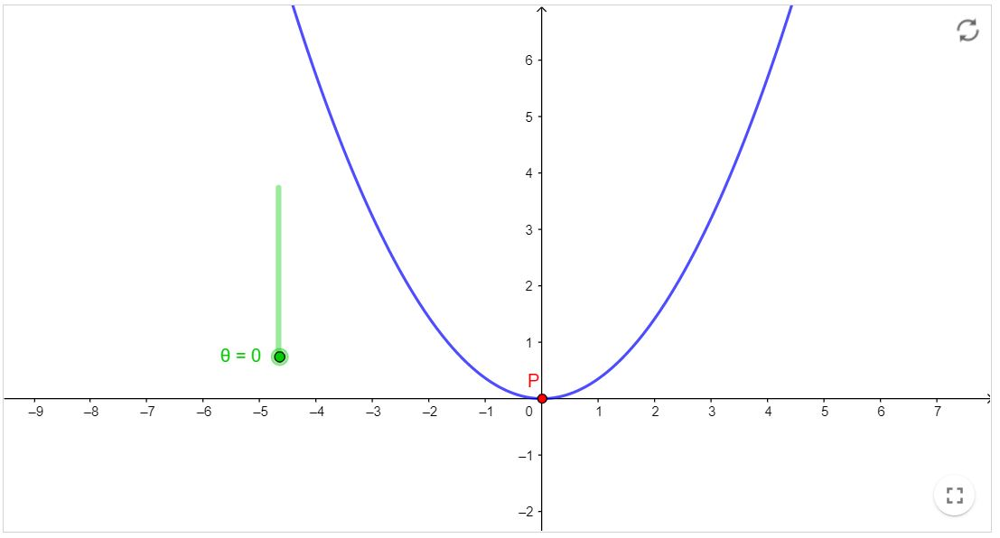
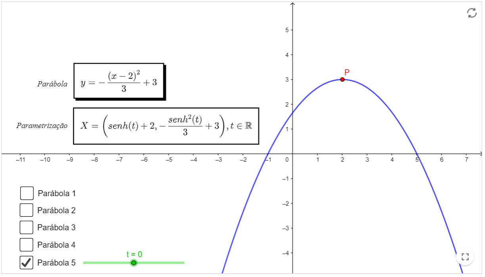

Revisão de Geometria Analítica
Parábola
Definição:
Conjunto dos pontos $P$ de um plano equidistantes de um ponto fixo $F$ e de uma reta fixa $d$ contidos neste plano.
Propriedade de reflexão da Parábola
Sejam $r$ a reta tangente no ponto $P$ de uma parábola de foco $F, \alpha$ o ângulo entre $r$ e o raio focal, e
$\beta$ o ângulo entre $r$ e a reta ortogonal a diretriz que passa $P$. Então $\alpha$ e $\beta$ são iguais.
Em outras palavras, o resultado acima garante que: a reflexão de uma reta paralela ao eixo da parábola
(ou seja, ortogonal a diretriz) passará pelo foco da parábola.
Equações paramétricas da Parábola
Considere uma parábola com equação cartesiana $\left(y-y_{0}\right)=a\left(x-x_{0}\right)^{2}$ com $a \in \mathbb{R}$, vértice $v=\left(x_{0}, y_{0}\right)$
e reta focal paralela ao eixo $-O Y$. Uma forma de parametrizar essa curva seria:
$x-x_{0}=t \Longrightarrow x=t+x_{0}$
$y=y_{0}+a\left(x-x_{0}\right)^{2}=y=a t^{2}+y_{0}$
Onde $t \in \mathbb{R}$.
Caso você encontre, nos seus exercícios, parábolas na forma $y=a x^{2}+b x+c$, com $a, b, c \in \mathbb{R}$, note que ela é essencialmente igual à
parábola apresentada aqui, basta você completar quadrados e agrupar os termos de forma conveniente, chegando ao mesmo resultado (é um bom exercício para treinar habilidades de Matemática Básica).
Em recursos computacionais você encontra um parábola parametrizada da maneira que aqui fora exposto.
Outras parametrizações da Parábola
Uma parábola descrita pela equação reduzida $x^{2}=4 p y$, com $p>0$, pode ser descrita também através das seguintes equações paramétricas: $x=4 p \tan (\theta)$ $y=4 p \tan (\theta)^{2}$
onde $\theta$ é um ângulo variando entre $[0, \pi]$.
A construção em recursos computacionais ilustra esta forma de escrever a Parábola (varie os valores de $\theta$ ).
Além dessa, podemos ter inúmeras. O fato é que uma parábola com vértice $v=\left(x_{0}, y_{0}\right)$, coeficiente líder $a$ (aquele que acompanha $x^{2}$ ) e eixo focal paralelo ao eixo
$-O Y$ ( $y$ em função de $x$ ) poderá ser parametrizado da seguinte forma:
$$
\begin{aligned}
&x=g(t)+x_{0} \\
&y=a \cdot g(t)^{2}+y_{0}
\end{aligned}
$$
Onde $t \in \mathbb{R}$, em geral. Porém, pode ser que mude, mas não costuma ser algo complicado para determinar. Além disso, é importante observar que a função $g(t)$ escolhida deve ser tal que
$g$ seja sobrejetiva em $\mathbb{R}$. Se você testar funções como $\operatorname{sen}(t), \cos (t), \sec (t)$ ou $t^{2 k}, k \in \mathbb{Z}$, você verá que, não importa o intervalo de t, não será
possível completar a parábola. Você saberia dizer o porquê?
- Em recursos computacionais, observe cinco maneiras de parametrizar uma parábola. Junto de cada parametrização, haverá um ponto $P$ para que você veja a trajetória variando o parâmetro $t$. Ademais, haverá caixas
que você poderá selecionar para ver cada uma das parábolas, basta clicar para aparacer/desaparecer. Sugerimos que não selecione várias de uma vez, pois isso pode ficar confuso.
Recursos computacionais
Parábola - Definição
Atividade: Mova o ponto $P$ ao longo da Parábola e verifique o que ocorre com os valores das distâncias de $P$ até o foco $F$ e de $P$ até a reta $d$.
Livro Geogebra

Parábola - Propriedade de reflexão
Livro Geogebra

Parábola - Equações Paramétricas I
Você poderá escolher os parâmetros $a, x_{0}, y_{0}$ (observe o que acontece com a equação cartesiana da parábola e com a parábola em si) e poderá variar o parâmetro $t$ para ver a trajetória do ponto $P$ pertencente à parábola.
- Ademais, note que existem duas caixas de seleção contendo a parábola tal que: $y=y(x)$, ou seja, o $y$ estará em função de $x$; ou $x=x(y)$, isto é, $x$ estará em função de $y$. Selecione uma de cada vez, para não haver um incômodo visual.
Livro Geogebra

voltar ao texto
Parábola - Equações Paramétricas II
Livro Geogebra

Parábola - Equações Paramétricas III
Livro Geogebra
